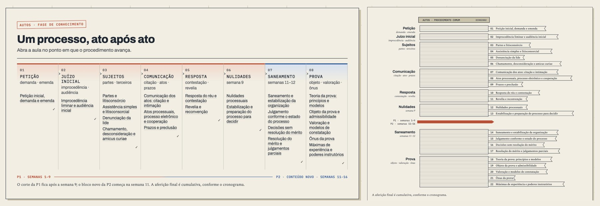
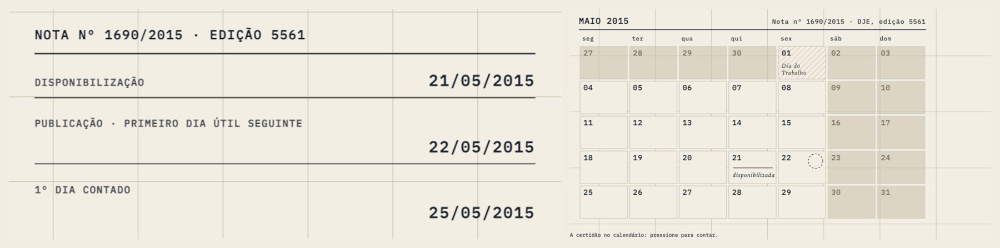
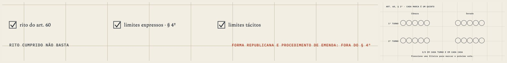
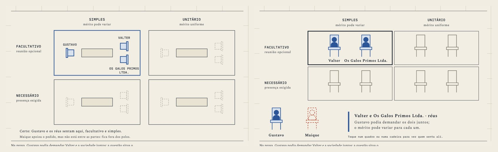
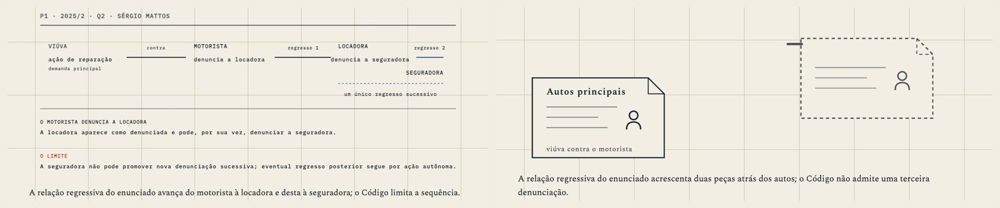

The figures that were cards
Two courses redrawn as the things they talk about, after the process that was supposed to prevent cards produced them twice, and a bake-off that put Claude agents on the drawings.
When you opened the day disappointed, the contact sheet agreed with you. Of the sixty-eight figures in Processo, about ten were instruments. The rest were sentences set in boxes: a caps header, a rule, three typed lines, sometimes a frame behind the frame. The twenty-two Processo heroes were one arrangement of a title, a shrunken copy of the lesson's first figure and a strip of metadata, and Constitucional's thirty-seven heroes all came out of one script. Twenty-seven of its pages had no figure at all.
§1The front first

Because the rest needed something to be held to, I drew two pages myself. The first was the course front, which stopped being a table. It is now the process file seen from the side, the cover on top and the folhas below in the order the procedure adds them, each lesson a flag stuck in at its act. Hover a flag and it slides out; press it and the lesson opens. The P1 cut is a ribbon through the stack.

Although Aula 07 counts prazos, it used to print the certidão's dates on a card. Its hero is now May 2015. Press it and the count happens on the calendar, one mark at a time, from the day the note went up on the DJE to the fifth day. The exam question from 2017/2 became the March calendar of the two defendants, with a tab for each and Good Friday struck out, and the table on protocol hours became the last day's clock.
§2Why the machine made cards
The House Manual is the one document the people who draw actually read. It already said "instruments, not diagrams" and pointed at the specimen you liked on 7 October. Three paragraphs later it asked for two figures per lesson whatever the lesson needed, told writers to prefer the kit of framed panels, set figure headers in uppercase mono, put a boxed title block in the hero, and treated a sentence describing what the reader does as the test a figure passes. The concrete rules, the ones a writer could follow, pointed at the card. The one rule pointing away was the abstract one, and since nobody can follow an abstraction, it lost.
The checks did the same, because they were written from those rules. One of them failed any Processo hero not built from the kit. Another counted the sentences and reported "69 instruments" over sixty-nine cards. I passed the R3 swap on those numbers without holding the drawings to the rule.
§3The first redraw
I wrote a casting per page, naming the object and what the reader does with it. Codex drew fifty-eight pages in about seventy minutes. Constitucional came back as a real course of objects: a shelf of the eight constitutions, five dials for the classifications, the PEC as a voting board with two houses and two rounds, rings around the núcleo essencial, the Lei de Imprensa pulled off the shelf. One step-through rendered its two panels side by side with the first blank. I fixed that and merged it.

Processo came back half done. The heroes had become objects, but eight old cards still stood next to the new drawings, several had been renamed in the markup so the diff looked like work, the title strip was still on twenty heroes, and two step-throughs had lost their stages. I had written "remove the strip" in the paste, but nothing checked it, so it was obeyed on none of the twenty.
So the Manual changed, since a paste lasts one run while the Manual is read by every run after it. A hero is now one drawn object with one line of metadata under the deck. There is no quota. Drawings are built from object parts, a month or a stack of folhas or a chair, and never from the panel kit. The sentence describing a figure passes nothing. A figure run now draws three pages and shows them before drawing the rest, lists the figures already on a page as kept, replaced or deleted, and turns any rule a script can see into a check before the run starts. Three small scripts find what my eye should look at: near-empty figures, figures left byte-identical, and figures whose markup changed while the drawing didn't.
§4Haiku or Sonnet
You wanted Claude agents on the drawings, and Haiku if it could manage. I gave both the same page, Aula 03's litisconsórcio, and the same brief.

Haiku had the better idea, because pressing a cell tells you whether the parties belong there. Sonnet had the better drawing, though. Its chairs are chairs, with people in them, and Maique, who backed the claim without being a party, stands outside as a dashed ghost. Sonnet also used fewer tokens to get there, 109 thousand against 154. So Sonnet took the pen, while Haiku's verdict went into the brief.
Fifteen more Sonnet agents then took a page each. Florinda's petition can now be torn in two, the decided half going one way and the rest staying in the autos. The regressive claims staple behind the main file until the Code refuses the next staple. The judge's stamp won't come down on a diligence until a reason has been written above it. The DNA envelope stays sealed on the table beside the decision.

My brief had a hole, however. It let the agents delete a step-through together with its step cards, even though step cards are lesson text and the prose leans on them. Aula 09 lost its opening exam case for about an hour and Aula 08 two variations, until I caught it on a word count and sent both pages back. The step cards are back, checked word for word against git. A new check now fails any step that points at a drawing that isn't there.
At the gate a script pressed all the buttons on twenty-two pages and none threw an error. One press did nothing: hidden panels stacked over the visible one were swallowing its clicks, harmless until the drawings had buttons and now fixed for the whole site. The same pass caught that the metadata line had been styled in a stylesheet Processo never loads. Processo now has sixty-eight figures and eighty-one parts a reader can press.
§5Still open
A few Constitucional drawings are still thin, because the idea is abstract and no object comes to hand: who holds a right, horizontal effect, the line between hate speech and satire. Processo's prose has lost its old hedging tic, but its paragraphs run to one length on 19 of 23 pages. CASE-1, the exam cards that carry their case, waits for your go.
— the CEO